폐기물처리기사 (2019-04-27 기출문제)
1과목: 폐기물 개론
1. 폐기물 수거체계 방식 가운데 하나인 HCS(견인식 컨테이너 시스템)의 장점으로 옳지 않은 것은?
- 미관상 유리하다.
- 손작업 운반이 용이하다.
- 시간 및 경비 절약이 가능하다.
- 비위생의 문제를 제거할 수 있다.
(정답률: 77%)

2. 적환장의 위치를 결정하는 사항으로 옳지 못한 것은?
- 건설과 운용이 가장 경제적인 곳
- 수거해야 할 쓰레기 발생지역의 무게가 중심에 가까운 곳
- 적환장의 운용에 있어서 공중의 반대가 적고 환경적 영향이 최소인 곳
- 수비게 간선도로에 연결될 수 있고 2차 보조수송수단과는 관련이 없는 곳
(정답률: 88%)
3. 생활 쓰레기 감량화에 대한 설명으로 가장 거리가 먼 것은?
- 가정에서의 물품 저장량을 적정 수준으로 유지한다.
- 깨끗하게 다듬은 채소의 시장 반입량을 증가시킨다.
- 백화점의 무포장센터 설치를 증가시킨다.
- 상품의 포장 공간 비율을 증가시킨다.
(정답률: 90%)
4. 관거(Pipeline)를 이용한 폐기물의 수거방식에 대한 설명으로 옳지 않은 것은?
- 장거리 수송이 곤란하다.
- 전처리 공정이 필요 없다.
- 가설 후에 경로변경이 곤란하고 설치비가 비싸다.
- 쓰레기 발생밀도가 높은 곳에서만 사용이 가능하다.
(정답률: 83%)
5. 쓰레기 발생량 예측방법으로 적절하지 않는 것은?
- 물질수지법
- 경향법
- 다중회귀모델
- 동적모사모델
(정답률: 87%)
6. 폐기물의 수거노선 설정 시 고려해야 할 사항과 가장 거리가 먼 것은?
- 지형이 언덕인 경우는 내려가면서 수거한다.
- 발생량이 적으나 수거빈도가 동일하기를 원하는 곳은 같은 날 왕복하면서 수거한다.
- 가능한 한 시계방향으로 수거노선을 정한다.
- 발생량이 가장 적은 곳부터 시작하여 많은 곳으로 수거노선을 정한다.
(정답률: 87%)
7. 유해폐기물을 소각하였을 때 발생하는 물질로서 광화학스모그이 주된 원인이 되는 물질은?
- 염화수소
- 일산화탄소
- 메탄
- 일산화질소
(정답률: 63%)
8. 강열감량(열작감량)의 정의에 대한 설명으로 가장 거리가 먼 것은?
- 강열감량이 높을수록 연소효율이 좋다.
- 소각잔사의 매립처분에 있어서 중요한 의미가 있다.
- 3성분 중에서 가연분이 타지 않고 남는 양으로 표현된다.
- 소각로의 연소효율을 판정하는 지표 및 설계 인자로 사용된다.
(정답률: 69%)
9. 쓰레기발생량이 6배로 증가하였으나 쓰레기수거노동력(MHT)은 그대로 유지시키고자 한다. 수거시간을 50% 증가시키는 경우 수거인원을 몇 배로 증가시켜야 하는가?
- 2.0배
- 3.0배
- 3.5배
- 4.0배
(정답률: 63%)
10. 적환장을 이용한 수집, 수송에 관한 설명으로 가장 거리가 먼 것은?
- 소형의 차량으로 폐기물을 수거하여 대형차량에 적환 후 수송하는 시스템이다.
- 처리장이 원거리에 위치할 경우에 적환장을 설치한다.
- 적환장은 수송차량에 싣는 방법에 따라서 직접투하식, 간접투하식으로 구별된다.
- 적환장 설치장소는 쓰레기 발생 지역의 무게 중심에 되도록 가까운 곳이 알맞다.
(정답률: 82%)
11. 물렁거리는 가벼운 물질로부터 딱딱한 물질을 선별하는 데 사용하며 경사진 콘베이어를 통해 폐기물을 주입시켜 천천히 회전하는 드럼 위에 떨어뜨려서 분류하는 것은?
- Stoners
- Jigs
- Secators
- Table
(정답률: 81%)
12. 도시쓰레기 중 비가연성 부분이 중량비로 약 60%를 차지하였다. 밀도가 450kg/m3인 쓰레기 8m3가 있을 때 가연성 물질의 양(kg)은?
- 270
- 1440
- 2160
- 3600
(정답률: 71%)
13. 퇴비화 과정의 초기단계에서 나타나는 미생물은?
- Bacillus sp.
- Streptomyces sp.
- Asperqillus fumigatus
- Fungi
(정답률: 74%)
14. 철, 구리, 유리가 혼합된 폐기물로부터 3가지를 각각 따로 분리할 수 있는 방법은?
- 정전기 선별
- 전자석 선별
- 광학 선별
- 와전류 선별
(정답률: 79%)
15. 고형물의 함량이 30%, 수분함량이 70%, 강열감량이 85%인 폐기물의 유기물 함량(%)는?
- 40
- 50
- 60
- 65
(정답률: 58%)
16. 쓰게기 발생량 조사방법이 아닌 것은?
- 적재차량 계수분석법
- 직접 계근법
- 물질수지법
- 경향법
(정답률: 84%)
17. 건조된 쓰레기 성상분석 결과가 다음과 같을 때 생물분해성 분율(BF)은? (단, 휘발성 고형물량 = 80%, 휘발성 고형물 중 리그닌 함량 = 25%)
- 0.785
- 0.823
- 0.915
- 0.985
(정답률: 45%)
18. MBT에 관한 설명으로 맞는 것은?
- 생물학적 처리가 가능한 유기성폐기물이 적은 우리나라는 MBT 설치 및 운영이 적합하지 않다.
- MBT는 지정폐기물의 전처리 시스템으로서 폐기물 무해화에 효과적이다.
- MBT는 주로 기계적 선별, 생물학적 처리 등을 통해 재활용 물질을 회수하는 시설이다.
- MBT는 생활폐기물 소각 후 잔재물을 대상으로 재활용 물질을 회수하는 시설이다.
(정답률: 69%)
19. 국내에서 발생되는 사업장폐기물 및 지정폐기물의 특성에 대한 설명으로 가장 거리가 먼 것은?
- 사업장폐기물 중 가장 높은 증가율을 보이는 것은 폐유이다.
- 지정페기물은 사업장폐기물의 한 종류이다.
- 일반사업장폐기물 중 무기물류가 가장 많은 비중을 차지하고 있다.
- 지정폐기물 중 그 배출량이 가장 많은 것은 폐산ㆍ폐알칼리이다.
(정답률: 64%)
20. 하수처리장에서 발생되는 슬러지와 비교한 분뇨의 특성이 아닌 것은?
- 질소의 농도가 높음
- 다량의 유기물을 포함
- 염분농도가 높음
- 고액분리가 쉬움
(정답률: 81%)
2과목: 폐기물 처리 기술
21. 분진제거를 위한 집진시설에 대한 설명으로 틀린 것은?
- 중력식 집진장치는 내부 가스유속을 5~10m/sec 정도로 유지하는 것이 바람직하다.
- 관성력식 집진장치는 10~100㎛이상의 분진을 50~70%까지 집진할 수 있다.
- 여과식 집진장치는 운전비가 많이 들고 고온다습한 가스에는 부적합하다.
- 전기식 집진장치는 집진효율이 좋으며, 고온(350℃)에서도 운전이 가능하다.
(정답률: 55%)
22. 매립가스 이용을 위한 정제기술 중 흡착법(PSA)의 장점으로 가장 거리가 먼 것은?
- 다양한 가스 조성에 적용이 가능함
- 고농도 CO2처리에 적합함
- 대용량의 가스처리에 유리함
- 공정수 및 폐수 발생이 없음
(정답률: 47%)
23. 합성차수막의 종류 중 PVC의 장점에 관한 설명으로 틀린 것은?
- 가격이 저렴하다.
- 접합이 용이하다.
- 강도가 높다.
- 대부분의 유기화학물질에 강하다.
(정답률: 62%)
24. 유기물(C6H12O6)0.1ton을 혐기성 소화할 때 생성될 수 있는 최대 메탄의 양(kg)은?
- 12.5
- 26.7
- 37.3
- 42.9
(정답률: 63%)
25. 내륙매립방법인 셀(Cell)공법에 관한 설명으로 옳지 않은 것은?
- 화재의 확산을 방지할 수 있다.
- 쓰레기 비탈면의 경사는 15~25%의 기울기로 하는 것이 좋다.
- 1일 작업하는 셀 크기는 매립장 면접에 따라 결정된다.
- 발생가스 및 매립층 내 수분의 이동이 억제된다.
(정답률: 68%)
26. VS 75%를 함유하는 슬러지고형물을 1ton/day로 받아들일 경우 소화조의 부하율(kg VS/m3ㆍday)은? (단, 슬러지의 소화용적=550m3, 비중이=1.0)
- 1.26
- 1.36
- 1.46
- 1.56
(정답률: 69%)
27. 매립지에서 폐기물의 생물학적 분해과정(5단계) 중 산 형성단계(제3단계)에 대한 설명으로 가장 거리가 먼 것은?
- 호기성 미생물에 의한 분해가 활발함
- 침출수의 pH가 5이하로 감소함
- 침출수의 BOD와 COD는 증가함
- 매립가스의 메탄 구성비가 증가함
(정답률: 72%)
28. 도시쓰레기를 위생 매립 시 고려하여야 할 사항으로 가장 거리가 먼 것은?
- 지반의 침하
- 침출수에 의한 지하수오염
- CH4 가스 발생
- CO2 가스 발생
(정답률: 61%)
29. 분뇨를 혐기성소화법으로 처리하는 경우, 정상적인 작동 여부를 파악할 떄 꼭 필요한 조사 항목으로 가장 거리가 먼 것은?
- 분뇨의 투입량에 대한 발생 가스량
- 발생 가스 중 CH4와 CO2의 비
- 슬러지 내의 유기산 농도
- 투입 분뇨의 비중
(정답률: 60%)
30. 하수처리장에서 발생한 생슬러지내 고형물은 유기물(VS) 85%, 무기물(FS) 15%로 되어 있으며, 이를 혐기소화조에서 처리하여 소화슬러지내 고형물은 유기물(VS) 70%, 무기물(FS) 30%로 되었을 때 소화율(%)은?
- 45.8
- 48.8
- 54.8
- 58.8
(정답률: 51%)
31. 토양이 휘발성유기물에 의해 오염되었을 경우 가장 적합한 공정은?
- 토양세척법
- 토양증기추출법
- 열탈착법
- 이온교환수지법
(정답률: 67%)
32. 유해폐기물의 고형화 방법 중 열가소성 플라스틱법에 관한 설명으로 옳지 않은 것은?
- 고온에서 분해되는 물질에는 사용할 수 없다.
- 용출손실율이 시멘트 기초법보다 낮다.
- 혼합률(MR)이 비교적 낮다.
- 고화처리된 폐기물성분을 나중에 회수하여 재활용할 수 있다.
(정답률: 52%)
33. 매립지에서 침출된 침출수 농도가 반으로 감소하는 데 약 3년이 걸린다면 이 침출수 농도가 90% 분해되는데 걸리는 시간(년)은?
- 6
- 8
- 10
- 12
(정답률: 69%)
34. 차수설비는 표면차수막과 연직차수막으로 구분되어 지는데 연직차수막에 대한 일반적인 내용으로 가장 거리가 먼 것은?
- 지중에 수평방향의 차수층이 존재하는 경우에 작용한다.
- 지하수 집배수 시설이 필요하다.
- 지하에 매설하기 때문에 차수성 확인이 어렵다.
- 차수막 단위면적당 공사비가 비싸지만 출공사비는 싸다.
(정답률: 65%)
35. 고형물의 농도 10kg/m3, 함수율 98%, 유량 700m3/day인 슬러지를 고형물 농도 50kg/m3이고, 함수율 95%인 슬러지로 농축시키고자 하는 경우 농축조의 소요 단면적(m2)은? (단, 침강속도=10m/day)(오류 신고가 접수된 문제입니다. 반드시 정답과 해설을 확인하시기 바랍니다.)
- 51
- 56
- 60
- 72
(정답률: 54%)
36. 슬러지 수분 결합상태 중 탈수하기 가장 어려운 형태는?
- 모관결합수
- 간극모관결합수
- 표면부착수
- 내부수
(정답률: 75%)
37. 가연성 물질의 연소 시 연소효율은 완전연소량에 비하여 실제 연소되는 양의 백분율로 표시한다. 관계식을 옳게 나타낸 것은? (단, η0=연소효율(%), Hl=저위발열량, Lc=미연소손실, Li=불완전연소 손실)
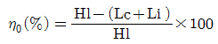
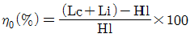
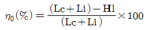
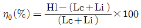
(정답률: 75%)
38. 다음의 조건에서 침출수 통과 연수(년)는? (단, 점토층의 두께=1m, 유효공극률=0.40, 투수계수=10-7cm/sec, 상부침출수 수두=0.4m)
- 약 7
- 약 8
- 약 9
- 약 10
(정답률: 51%)
39. 분뇨 슬러지를 퇴비화할 때 고려하여야 할 사항이 아닌 것은?
- 자연상태에서 생화학적으로 안정되어야 함
- 병원균, 회충란 등의 유무는 무관함
- 악취 등의 발생이 없어야 함
- 취급이 용이한 상태이여야 함
(정답률: 75%)
40. 주유소에서 오염된 토양을 복원하기 위해 오염 정도 조사를 실시한 결과, 토양오염 부피는 5000m3, BTEX는 평균 300mg/kg으로 나타났다. 이 때 오염토양에 존재하는 BTEX의 총 함량(kg)은? (단, 토양의 bulk density=1.9g/cm3)
- 2650
- 2850
- 3⑤0
- 3250
(정답률: 49%)
3과목: 폐기물 소각 및 열회수
41. 탄소(C) 10kg을 완전 연소시키는 데 필요한 이론적 산소량(Sm3)은?
- 약 7.8
- 약 12.6
- 약 15.5
- 약 18.7
(정답률: 60%)
42. 도시폐기물의 연속소각로 과잉공기비로 가장 적당한 것은?
- 0.1~1.0
- 1.5~2.5
- 5~10
- 25~35
(정답률: 59%)
43. 유동층 소각로의 Bad(층)물질이 갖추어야하는 조건으로 틀린 것은?
- 비중이 클 것
- 입도분포가 균일할 것
- 불활성일 것
- 열충격에 강하고 융점이 높을 것
(정답률: 68%)
44. 다음 조건과 같은 함유성분의 폐기물을 연소처리할 때 저위발열량(kcal/kg)은? (단, 함수율: 30%, 불활성분: 14%, 탄소: 20%, 수소: 10%, 산소: 24%, 유황: 2%, Dulong식 기준)
- 약 2400
- 약 3300
- 약 4200
- 약 4600
(정답률: 58%)
45. 배가스 세정 흡수탑의 조건에 관한 설명으로 가장 거리가 먼 것은?
- 흡수장치에 들어가는 가스의 온도는 일정하게 높게 유지시켜 주어야 한다.
- 세정액에 중화제액 혼입에 의한 화학반응 속도를 향상시킬 필요가 있다.
- 세정액과 가스의 접촉면적을 크게 잡고 교란에 의한 기체/액체 접촉을 높여야 한다.
- 비교적 물에 대한 용해도가 낮은 CO, NO, H2S 등의 흡수 평행조건은 헨리의 법칙을 따른다.
(정답률: 44%)
46. 스토커식 소각로에 있어서 여러 개의 부채형 화격자를 노폭 방향으로 조합하고, 한조의 화격자를 형성하여 편심 캠에 의한 역주행 Grate로 되어 있는 연소장치의 종류는?
- 반전식(Traveling back Stoker)
- 계단식(Multistepped pushing grate Stoker)
- 병열계단식(Rows forced feed grate Stoker)
- 역동식(Pushing back grate Stoker)
(정답률: 59%)
47. 밀도가 600kg/m3인 도시쓰레기 100ton을 소각시킨 결과 밀도가 1200kg/m3인 재10ton이 남았다. 이 경우 부피 감소율과 무게 감소율에 관한 설명으로 옳은 것은?
- 부피 감소율이 무게 감소율 보다 크다.
- 무게 감소율이 부피 감소율 보다 크다.
- 부피 감소율과 무게 감소율은 동일하다.
- 주어진 조건만으로는 알 수 없다.
(정답률: 56%)
48. 폐기물의 연소실에 관한 설명으로 적절치 않은 것은?
- 연소실은 폐기물을 건조, 휘발, 점화시켜 연소시키는 1차 연소실과 여기서 미연소될 것을 연소시키는 2차 연소실로 구성된다.
- 연소실의 온도는 1500~2000℃정도이다.
- 연소실의 크기는 주입폐기물의 무게(ton)당 0.4~0.6m3/day로 설계되고 있다.
- 연소로의 모형은 직사각형, 수직원통형, 혼합형, 로타리킬른형 등이 있다.
(정답률: 53%)
49. 유동층 소각로 특성에 대한 설명으로 옳지 않은 것은?
- 미연소분 배출이 많아 2차 연소실이 필요하다.
- 반응시간이 빨라 소각시간이 짧다.
- 기계적 구동부분이 상대적으로 적어 고장률이 낮다.
- 소량의 과잉공기량으로도 연소가 가능하다.
(정답률: 60%)
50. 소각로 본체 내부는 내화벽돌로 구성되어 있다. 내부에서 차례로 두께가 114, 65, 230mm이고 또 k의 값은 0.104, 0.⑤95, 1.04kal/mㆍhrㆍ℃이다. 내부온도 900℃, 외벽온도 40℃일 경우 단위면적당 전체 열저항(m2ㆍhrㆍ℃/kcal)은?
- 1.42
- 1.52
- 2.42
- 2.52
(정답률: 37%)
51. 소각로 설계에 필요한 쓰레기의 발열량 분석방법이 아닌 것은?
- 단열 열량계에 의한 방법
- 원소분석에 의한 방법
- 추정식에 의한 방법
- 상온상태하의 수분증발 잠열에 의한 방법
(정답률: 60%)
52. 탄소 및 수소의 중량조성이 각각 80%, 20%인 액체연료를 매 시간 200kg씩 연소시켜 배기가스의 조성을 분석한 결과 CO2 12.5%, O2 3.5%, N2 84%이였다. 이 경우 시간당 필요한 공기량(Sm3)은?
- 약 3450
- 약 2950
- 약 2450
- 약 1950
(정답률: 51%)
53. 연소기 내에 단회로(Short-circuit)가 형성되면 불완전 연소된 가스가 외부로 배출된다. 이를 방지하기 위한 대책으로 가장 적절한 것은?
- 보조버너를 가동시켜 연소온도를 증대시킨다.
- 2차연소실에서 체류시간을 늘린다.
- Grate의 간격을 줄인다.
- Baffle을 설치한다.
(정답률: 66%)
54. 황화수소 1Sm3의 이론연소 공기량(Sm3)은?
- 7.1
- 8.1
- 9.1
- 10.1
(정답률: 52%)
55. 화격자 연소 중 상부투입 연소에 대한 설명으로 잘못된 것은?
- 공급연기는 우선 재층을 통과한다.
- 연료와 공기의 흐름이 반대이다.
- 하부투입 연소보다 높은 연소온도를 얻는다.
- 착화면 이동방향과 공기 흐름방향이 반대이다.
(정답률: 46%)
56. 소각공정에서 발생하는 다이옥신에 관한 설명으로 가장 거리가 먼 것은?
- 쓰레기 중 PVC 또는 플라스틱류 등을 포함하고 있는 합성물질을 연소시킬 때 발생한다.
- 연소 시 발생하는 미연분의 양과 비산재의 양을 줄여 다이옥신을 저감할 수 있다.
- 다이옥신 재형성 온도구역을 최대화하여 재합성 양을 줄일 수 있다.
- 활성탄과 백필터를 적용하여 다이옥신을 제거하는 설비가 많이 이용된다.
(정답률: 66%)
57. 오리피스 구멍에서 유량과 유압의 관계가 옳은 것은?
- 유량은 유압에 정비례한다.
- 유량은 유압의 세제곱근에 비례한다.
- 유량은 유압의 제곱근에 비례한다.
- 유량은 유압의 제곱에 비례한다.
(정답률: 55%)
58. 소각로의 연소온도에 관한 설명으로 가장 거리가 먼 것은?
- 연소온도가 너무 높아지면 NOx 또는 SOx가 생성된다.
- 연소온도가 낮게 되면 불완전연소로 HC 또는 CO등이 생성된다.
- 연소온도는 600~1000℃정도이다.
- 연소실에서 굴뚝으로 유입되는 온도는 700~800℃정도이다.
(정답률: 41%)
59. 소각로로부터 폐열을 회수하는 경우의 장점에 해당되지 않는 것은?
- 열회수로 연소가스의 온도와 부피를 줄일 수 있다.
- 과잉 공기량이 비교적 적게 요구된다.
- 소각로의 연소실 크기가 비교적 크지 않다.
- 조작이 간단하며 수증기 생산설비가 필요없다.
(정답률: 52%)
60. 소각로의 연소효율을 증대시키는 방법이 아닌 것은?
- 적절한 연소시간
- 적절한 온도 유지
- 적절한 공기공급과 연료비
- 연소조건은 층류
(정답률: 70%)
4과목: 폐기물 공정시험기준(방법)
61. 다음에 설명한 시료 축소 방법은?
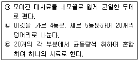
- 구획법
- 등분법
- 균등법
- 분할법
(정답률: 72%)
62. 폐기물공정시험기준의 용어 정의로 틀린 것은?
- 시험조작 중 ‘즉시’란 30초 이내에 표시된 조작을 하는 것을 뜻한다.
- 감압 또는 진공이라 함은 따로 규정이 없는 한 15mmHg 이하를 말한다.
- ‘항량으로 될 때까지 건조한다’라 함은 같은 조건에서 1시간 더 건조할 때 전후 무게의 차가 g당 0.1mg 이하일 때를 말한다.
- ‘비함침성 고상폐기물’이라 함은 금속판, 구리선 등 기름을 흡수하지 않는 평면 또는 비평면형태의 변압기 내부부재를 말한다.
(정답률: 75%)
63. pH가 각각 10과 12인 폐액을 동일 부피로 혼합하면 pH는?
- 10.3
- 10.7
- 11.3
- 11.7
(정답률: 38%)
64. 수소이온농도(유리전극법) 측정을 위한 표준용액 중 가장 강한 산성을 나타내는 것은?
- 수산염 표준액
- 인산염 표준액
- 붕산염 표준액
- 탄산염 표준액
(정답률: 56%)
65. 자외선/가시선 분광법과 원자흡수분광광도법의 두 가지 시험방법으로 모두 분석할 수 있는 항목은? (단, 폐기물공정시험기준에 준함)
- 시안
- 수은
- 유기인
- 폴리클로리네이티드비페닐
(정답률: 63%)
66. 원자흡수분공광도법에 의한 분석 시 일반적으로 일어나는 간섭과 가장 거리가 먼 것은?
- 장치나 불꽃의 성질에 기인하는 분광학적 간섭
- 시료용액의 점성이나 표면장력 등에 의한 물리적 간섭
- 시료 중에 포함된 유기물 함량, 성분 등에 의한 유기적 간섭
- 불꽃 중에서 원자가 이온화하거나 공존물질과 작용하여 해리하기 어려운 화합물을 생성, 기저상태 원자수가 감소되는 것과 같은 화학적 간섭
(정답률: 58%)
67. 시료 중 수분함량 및 고형물함량을 정량한 결과가 다음과 같다면 고형물함량(%)은? (단, 증발접시의 무게(W1=245g, 건조 전의 증발접시와 시료의 무게(W2=260g, 건조 후의 증발접시와 시료의 무게(W3=250g)
- 약 21
- 약 24
- 약 28
- 약 33
(정답률: 57%)
68. 기름성분을 중량법으로 측정할 때 정량한계 기준은?
- 0.1% 이하
- 1.0% 이하
- 3.0% 이하
- 5.0% 이하
(정답률: 55%)
69. 운반가스로 순도 99.99% 이상의 질소 또는 헬륨을 사용하여야 하는 기체크로마토그래피의 검출기는?
- 열전도도형 검출기
- 알칼리열이온화 검출기
- 염광광도형 검출기
- 전자포획형 검출기
(정답률: 62%)
70. 시료의 용출시험방법에 관한 설명으로 ( )에 옳은 것은? (단, 상온, 상압 기준)
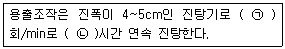
- ㉠ 200 ㉡ 6
- ㉠ 200 ㉡ 8
- ㉠ 300 ㉡ 6
- ㉠ 300 ㉡ 8
(정답률: 63%)
71. 폐기물 시료 20g에 고형물 함량이 1.2g이었다면 다음 중 어떤 폐기물에 속하는가? (단, 폐기물의 비중=1.0)
- 액상폐기물
- 반액상폐기물
- 반고상폐기물
- 고상폐기물
(정답률: 67%)
72. 자외선/가시선 분광법으로 비소를 측정하는 방법으로 ( )에 옳은 것은?
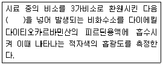
- 과망간산칼륨 용액
- 과산화수소수 용액
- 요오드
- 아연
(정답률: 55%)
73. 자외선/가시선 분광광도계의 광원에 관한 설명으로 ( )에 알맞은 것은?
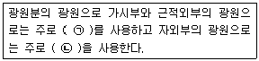
- ㉠ 텅스텐램프 ㉡ 증수소 방전관
- ㉠ 중수소 방전관 ㉡ 텅스텐램프
- ㉠ 할로겐램프 ㉡ 헬륨 방전관
- ㉠ 헬륨 방전관 ㉡ 할로겐램프
(정답률: 67%)
74. 용출시험 대상의 시료용액 조제에 있어서 사용하는 용매의 pH범위는?
- 4.8~5.3
- 5.8~6.3
- 6.8~7.3
- 7.8~8.3
(정답률: 68%)
75. 반고상 폐기물이라 함은 고형물의 함량이 몇 %인 것을 말하는가?
- 5% 이상 10% 미만
- 5% 이상 15% 미만
- 5% 이상 20% 미만
- 5% 이상 25% 미만
(정답률: 70%)
76. 용출액 중의 PCBS시험방법(기체크로마토그래피법)을 설명한 것으로 틀린 것은?
- 용출액 중의 PCBS를 헥산으로 추출한다.
- 전자포획형 검출기(ECD)를 사용한다.
- 정제는 활성탄칼럼을 사용한다.
- 용출용액의 정량한계는 0.00⑤mg/L 이다.
(정답률: 51%)
77. 폐기물 소각시설의 소각재 시료채취에 관한 내용 중 회분식 연소 방식의 소각재 반출 설비에서의 시료채취 내용으로 옳은 것은?
- 하루 동안의 운행시간에 따라 매 시간마다 2회 이상 채취하는 것을 원칙으로 한다.
- 하루 동안의 운행시간에 따라 매 시간마다 3회 이상 채취하는 것을 원칙으로 한다.
- 하루 동안의 운전횟수에 따라 매 운전시마다 2회 이상 채취하는 것을 원칙으로 한다.
- 하루 동안의 운전횟수에 따라 매 운전식마다 3회 이상 채취하는 것을 원칙으로 한다.
(정답률: 65%)
78. 다음 중 HCl의 농도가 가장 높은 것은? (단, HCl용액의 비중 = 1.18)
- 14W/W%
- 15W/V%
- 155g/L
- 1.3×105ppm
(정답률: 34%)
79. 수소이온농도를 유리전극법으로 측정할 떄 적용범위 및 간섭물질에 관한 설명으로 옳지 않은 것은?
- 적용범위 : 시험기준으로 pH를 0.01까지 측정한다.
- pH 10이상에서 나트륨에 의해 오차가 발생할 수 있는데 이는 ‘낮은 나트륨 오차 전극’을 사용하여 줄일 수 있다.
- 유리전극은 일반적으로 용액의 색도, 탁도에 영향을 받지 않는다.
- 유리전극은 산화 및 환원성 물질이나 염도에는 간섭을 받는다.
(정답률: 56%)
80. 정도관리 요소 중 다음이 설명하고 있는 것은?
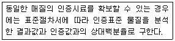
- 정확도
- 정밀도
- 검출한계
- 정량한계
(정답률: 56%)
5과목: 폐기물 관계 법규
81. 사업장폐기물배출자는 사업장폐기물의 종류와 발생량 등을 환경부령으로 정하는 바에 따라 신고하여야 한다. 이를 위반하여 신고를 하지 아니하거나 거짓으로 신고를 한 자에 대한 과태료 처분 기준은?
- 200만원 이하
- 300만원 이하
- 500만원 이하
- 1천만원 이하
(정답률: 52%)
82. 폐기물처리시설의 사용개시신고 시에 첨부하여야 하는 서류는?
- 해당 시설의 유지관리계획서
- 폐기물의 처리계획서
- 예상배출내역서
- 처리후 발생되는 폐기물의 처리계획서
(정답률: 37%)
83. 매립시설의 사후관리이행보증급의 산출기준 항목으로 틀린 것은?
- 침출수 처리시설의 가동 및 유지ㆍ관리에 드는 비용
- 매립시설 제방 등의 유실 방지에 드는 비용
- 매립시설 주변의 환경오염조사에 드는 비용
- 매립시설에 대한 민원 처리에 드는 비용
(정답률: 60%)
84. 음식물류 폐기물 발생억제 계획의 수립주기는?
- 1년
- 2년
- 3년
- 5년
(정답률: 65%)
85. 사후관리이행보증금의 사전적립에 관한 설명으로 ( )에 알맞은 것은?
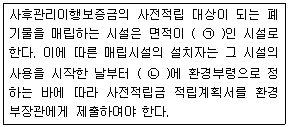
- ㉠ 1만제곱미터 이상, ㉡ 1개월 이내
- ㉠ 1만제곱미터 이상, ㉡ 15일 이내
- ㉠ 3천300제곱미터 이상, ㉡ 1개월 이내
- ㉠ 3천300제곱미터 이상, ㉡ 15일 이내
(정답률: 58%)
86. 지정폐기물을 배출하는 사업자가 지정폐기물을 처리하기 전에 환경부장관에게 제출하여야 하는 서류가 아닌 것은?
- 폐기물 감량화 및 재활용 계획서
- 수탁처리자의 수탁확인서
- 폐기물 전문분석기관의 폐기물 분석결과서
- 폐기물처리계획서
(정답률: 51%)
87. 폐기물처리업의 변경허가를 받아야 하는 중요사항으로 틀린 것은? (단, 폐기물 중간처분업, 폐기물 최정처분업 및 폐기물 종합처분업인 경우)
- 주차장 소재자의 변경
- 운반차량(임시차량은 제외한다.)의 증차
- 처분대상 폐기물의 변경
- 폐기물 처분시설의 신설
(정답률: 60%)
88. 폐기물처리 담당자가 받아야 할 교육과정이 아닌 것은?
- 폐기물처리 신고자 과정
- 폐기물 재활용 신고자 과정
- 폐기물처리업 기술요원 과정
- 폐기물 재활용시설 기술담당자 과정
(정답률: 44%)
89. 폐기물처리시설 중 기계적 재활용시설이 아닌 것은?
- 연료화 시설
- 탈수ㆍ건조 시설
- 응집ㆍ침전 시설
- 증발ㆍ농축 시설
(정답률: 65%)
90. 폐기물처리업의 시설ㆍ장비ㆍ기술능력의 기준 중 폐기물 수집ㆍ운반업(지정 폐기물 중 의료폐기물을 수집ㆍ운반하는 경우) 장비 기준으로 ( )에 옳은 것은?
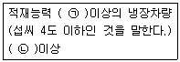
- ㉠ 0.25톤 ㉡ 5대
- ㉠ 0.25톤 ㉡ 3대
- ㉠ 0.45톤 ㉡ 5대
- ㉠ 0.45톤 ㉡ 3대
(정답률: 50%)
91. 폐기물관리법에서 사용하는 용어 설명으로 틀린 것은?
- 지정폐기물이란 사업장폐기물 중 폐유ㆍ폐산 등 주변 환경을 오염시킬 수 있거나 유해폐기물 등 인체에 위해를 줄 수 있는 해로운 물질로서 환경부령으로 정하는 폐기물을 말한다.
- 의료폐기물이란 보건ㆍ의료기관, 동물병원, 시험ㆍ검사기관 등에서 배출되는 폐기물 중 인체에 감염 등 위해를 줄 우려가 있는 폐기물과 인체 조직 등 적출물, 실험 동물의 사체 등 보건ㆍ환경보호상 특별한 관리가 필요하다고 인정되는 폐기물로서 대통령령으로 정하는 폐기물을 말한다.
- 처리란 폐기물의 수집, 운반, 보관, 재활용, 처분을 말한다.
- 처분이란 폐기물의 소각ㆍ중파ㆍ파쇄ㆍ고형화 등의 중간처분과 매립하거나 해역으로 배출하는 등의 최종처분을 말한다.
(정답률: 62%)
92. 폐기물 처리시설의 설치 및 운영을 하려는 자가 처리시설별로 검사를 받아야 하는 기관연결이 틀린 것은?
- 소각시설 : 한국산업기술시험원
- 매립시설 : 한국농어촌공사
- 멸균분쇄시설 : 한국건설기술연구원
- 음식물류 폐기물 처리시설 : 한국산업기술시험원
(정답률: 52%)
93. 매립지의 사후관리 기준 방법에 관한 내용 중 토양 조사 횟수 기준(토양조사방법)으로 옳은 것은?
- 월 1회 이상 조사
- 매 분기 1회 이상 조사
- 매 반기 1회 이상 조사
- 연 1회 이상 조사
(정답률: 55%)
94. 관리형 매립시설에서 발생하는 침출수의 배출하용기준으로 옳은 것은? (단, 청정지역, 단위 mg/L, 중크롬산칼륨법에 의한 화학적 산소요구량 기준이며 ( )안의 수치는 처리 효율을 표시함)
- 200(90%)
- 300(90%)
- 400(90%)
- 500(90%)
(정답률: 43%)
95. 기술관리인을 두어야 하는 폐기물 처리시설이 아닌 것은?
- 폐기물에서 비철금속을 추출하는 용해로로서 시간당 재활용능력이 600킬로그램 이상인 시설
- 소각열회수시설로서 시간당 재활용능력이 500킬로그램 이상인 시설
- 압축ㆍ파쇄ㆍ분쇄 또는 절단시설로서 1일 처분능력 또는 재활용 능력이 100톤 이상인 시설
- 사료화ㆍ퇴비화 또는 연료화시설로서 1일 재활용능력이 5톤 이상인 시설
(정답률: 58%)
96. 특별자치시장, 특별자치도지사, 시장ㆍ군수ㆍ구청장이 관할 구역의 음식물류 폐기물의 발생을 최대한 줄이고 발생한 음식물류 폐기물을 적절하게 처리하기 위하여 수립하는 음식물류 폐기물발생 억제계획에 포함되어야하는 사항과 가장 거리가 먼 것은?
- 음식물류 폐기물 재활용 및 재이용 방안
- 음식물류 폐기물의 발생 억제 목표 및 목표 달성 방안
- 음식물류 폐기물의 발생 및 처리 현황
- 음식물류 폐기물 처리시설의 설치 현황 및 향후 설치 계획
(정답률: 45%)
97. 폐기물 관리의 기본원칙으로 틀린 것은?
- 사업자는 제품의 생산방식 등을 개선하여 폐기물의 발생을 최대한 억제해야 한다.
- 폐기물은 우선적으로 소각, 매립 등의 처분을 한다.
- 폐기물로 인하여 환경오염을 일으킨 자는 오염된 환경을 복원할 책임을 져야 한다.
- 누구든지 폐기물을 배출하는 경우에는 주변 환경이나 주민의 건강에 위해를 끼치지 아니하도록 사전에 적절한 조치를 하여야 한다.
(정답률: 69%)
98. 정지적으로 주변지역에 미치는 영향을 조사하여야 할 폐기물처리시설에 해당하는 것은?
- 1일 처분능력이 30톤 이상인 사업장폐기물 소각시설
- 1일 재활용능력이 30톤 이상인 사업장폐기물 소각열회수시설
- 매립면적이 1만 제곱미터 이상의 사업장 지정폐기물 매립시설
- 매립면적이 10만 제곱미터 이상의 사업장 일반폐기물 매립시설
(정답률: 57%)
99. 의료폐기물(위해의료폐기물)중 시험ㆍ검사 등에 사용된 배양액, 배양욕기, 보관균주, 폐시험관, 슬라이드, 커버글라스, 폐배지, 폐장갑이 해당되는 것은?
- 병리계폐기물
- 손상성폐기물
- 위생계페기물
- 보건성폐기물
(정답률: 64%)
100. 폐기물처리 신과와 광역 폐기물처리시설 설치ㆍ운영자의 폐기물처리기간에 대한 설명으로 ( )에 순서대로 알맞게 나열한 것은? (단, 폐기물관리법 시행규칙 기준)
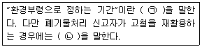
- ㉠ 10일 ㉡ 30일
- ㉠ 15일 ㉡ 30일
- ㉠ 30일 ㉡ 60일
- ㉠ 60일 ㉡ 90일
(정답률: 51%)